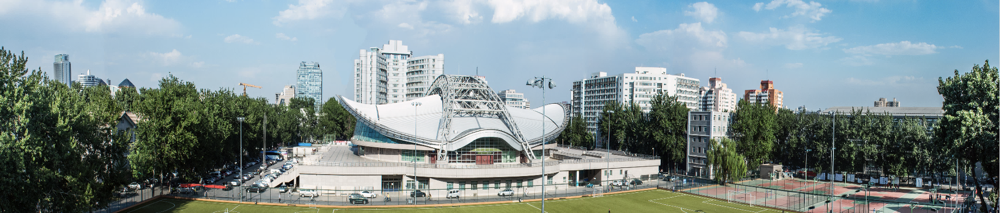

2026
[2026.09] 实验室团队在模式识别领域顶级期刊Pattern Recognition（中科院1区）发表学术论文1篇。
[2026.06] 实验室团队在数据库领域国际顶级会议ACM SIGMOD'26（CCF A）发表学术论文1篇。
[2026.04.20] 实验室团队在数据挖掘领域国际顶级会议ACM KDD'26（CCF A）发表学术论文1篇。
[2026.03.14] 实验室团队在人工智能领域国际顶级会议AAAI'26（CCF A）发表学术论文2篇。
[2026.03] 实验室团队在人工智能领域顶级期刊Information Fusion（中科院1区）发表学术论文1篇。
[2026.02] 实验室团队在人工智能领域顶级期刊Engineering Applications of Artificial Intelligence（中科院1区）发表学术论文1篇。
[2026.01.07] 实验室阮思捷老师获CCF-快手大模型探索者基金资助。
[2026.01] 实验室耿晶副教授主持国家自然科学基金面上项目。
[2026] 实验室董培炎教授入选北京智源人工智能研究院“智源学者计划”。 |
2025
[2025.12] 实验室团队在机器学习领域国际顶级会议NeurIPS'25（CCF A）发表学术论文1篇。
[2025.11.14] 实验室李锦宇同学的论文获ACM CIKM 2025 GMLLM Workshop最佳论文奖。
[2025.08] 实验室唐易成、冷晓霆、朱嘉宝同学组成的UrbanTrip团队在阮思捷老师指导下，获得IJCAI 2025旅程规划挑战赛Domain-Specific Language Track（领域特定语言赛道）冠军。
[2025.05.15] 实验室团队在数据挖掘领域国际顶级会议ACM KDD'25（CCF A）发表学术论文1篇。
[2025.05.12] 实验室韩华旭同学获得ICDE 2025 Travel Grant。
[2025.03.26] 实验室团队在数据挖掘领域国际顶级会议IEEE ICDE'25（CCF A）发表学术论文1篇。
[2025.03.24] 阮思捷老师入选2024年度电子学会博士学位论文激励计划。
[2025.01.26] 实验室团队在数据挖掘领域国际顶级期刊ACM TOIS（CCF A）发表学术论文1篇。
[2025] 实验室阮思捷老师获北京理工大学优秀青年教师发展奖励基金。
[2025] 实验室阮思捷老师主持贵州省科技支撑计划项目。
|
2024
[2024.11.26] 实验室团队在数据挖掘领域国际顶级期刊IEEE TKDE（CCF A）发表学术论文1篇。
[2024.11.24] 实验室冷晓霆（硕士研究生）等同学获得中国测绘学会主办的第四届“苍穹杯”全国大学生空间信息技术大赛应用开发组特等奖。
[2024.08.23] 实验室方兰婷副教授牵头获批国家自然科学基金面上项目。
[2024.05.18] 实验室团队在数据挖掘领域国际顶级期刊IEEE TKDE（CCF A）发表学术论文1篇。
[2024.05.17] 实验室团队在数据挖掘领域国际顶级会议ACM SIGKDD（CCF A）发表学术论文1篇。
[2024.05] 实验室赵柏翔同学获得北京理工大学优秀博士学位论文育苗基金。
[2024.04.25] 实验室阮思捷老师全票当选ACM SIGSPATIAL中国分会执行委员。
[2024.4] 实验室团队在模式识别领域顶级期刊Pattern Recognition（中科院1区）发表学术论文1篇。
[2024.04.02] 实验室团队编制的人工智能领域团体标准《智能大数据采集系统通用技术条件》正式发布。
[2024.3] 实验室赵柏翔同学获得北京市三好学生。 [2024.02.27] 实验室团队在计算机视觉领域顶级会议CVPR（CCF A）发表论文1篇。
[2024.01.28] 实验室团队在遥感领域顶级期刊IEEE TGRS（中科院1区）发表学术论文1篇。 |
2023
[2023.12.28] 实验室阮思捷老师牵头获批国家重点研发计划子课题。 [2023.12.28] 实验室袁汉宁副教授牵头获批国家重点研发计划子课题。 [2023.12.15] 实验室王树良教授牵头获批国家重点研发计划项目。 [2023.12.02] 实验室团队在数据工程领域国际顶级会议IEEE ICDE（CCF A）发表学术论文1篇。 [2023.12] 实验室团队在信息领域顶级期刊Information Science（中科院1区）发表学术论文1篇。 [2023.08.24] 实验室实验室团队牵头荣获中国指挥与控制学会科学技术进步奖（技术发明类）一等奖。 [2023.08.24] 实验室王树良教授牵头获批国家自然科学基金面上项目。 [2023.08.24] 实验室阮思捷老师牵头获批国家自然科学基金青年项目。 [2023.07.10] 实验室团队在电子信息领域中文顶级期刊电子学报（CCF A类中文期刊）发表综述论文1篇。 [2023.5] 实验室团队在信息领域顶级期刊Information Science（中科院1区）发表学术论文1篇。 |
2022
[2022.09.17] 实验室阮思捷老师获ACM SIGSPATIAL中国分会优博奖（2022年度全国唯一）。 [2022.09.07] 实验室耿晶副研究员牵头获批国家自然科学基金青年项目。
[2022.05.17] 实验室团队在数据挖掘领域国际顶级会议ACM SIGKDD（CCF A）发表学术论文1篇。 [2022.3.4] 实验室团队在计算机视觉领域顶级会议CVPR（CCF A）发表论文1篇。 |
|

|
|
|